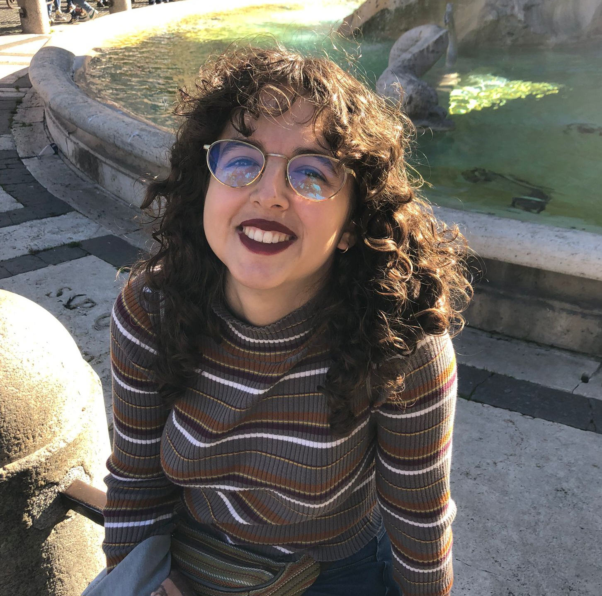

Me doctoré en Historia por la Universidad Complutense de Madrid en 2025 y, desde principios de 2026, soy contratada MOMENTUM en el Centro de Ciencias Humanas y Sociales del CSIC, en Madrid. Desde el comienzo de mi etapa predoctoral, mis investigaciones se han centrado en la espiritualidad femenina en los mundos ibéricos de la Edad Moderna y en la recuperación del patrimonio archivístico de grupos tradicionalmente invisibilizados en la época, incluyendo mujeres, afrodescendientes y minorías religiosas. Actualmente, continúo desarrollando estos temas como parte de mi investigación postdoctoral, al tiempo que me formo en la aplicación de tecnologías digitales en la investigación y la enseñanza histórica. En este portfolio podréis encontrar información sobre mi trayectoria formativa, mis investigaciones finalizadas y en curso, mis publicaciones y mi actividad docente.
Si te interesa mi trabajo, compartimos alguna línea de investigación o tienes un proyecto en mente en el que podamos colaborar, no dudes en escribirme. Estaré encantada de conocerte y explorar nuevas ideas juntos.
El historiador es como el médico, utiliza cuadros que describen las enfermedades de un paciente en particular. Y el conocimiento histórico es como el médico, es indirecto, indicial y conjetural.
Carlo Ginzburg